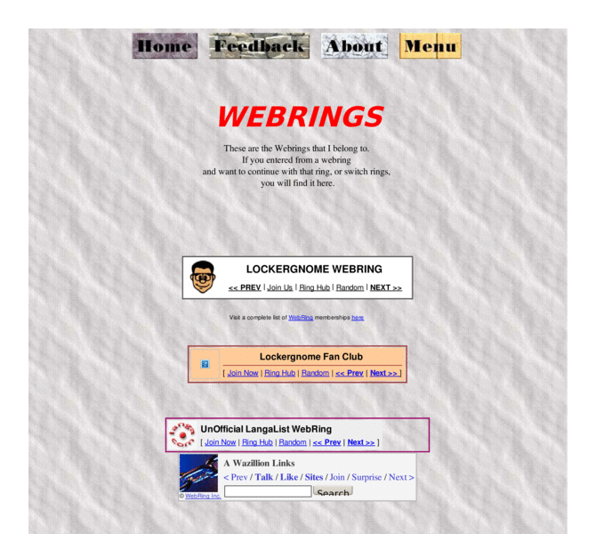

Previewing: Kauffman's Home Page Previewing: Kauffman's Home Page 
Use the left/right red arrow controls to navigate through this ring - Click the preview image to visit the member site.

A place to find good sites for different interests, by topic. Site descriptions supplied.
Kauffman's Home Page owned by:
 sbruce45 sbruce45
A member of the original webring since 01/28/2012.
|
|